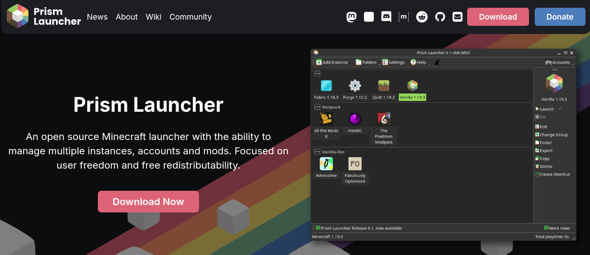
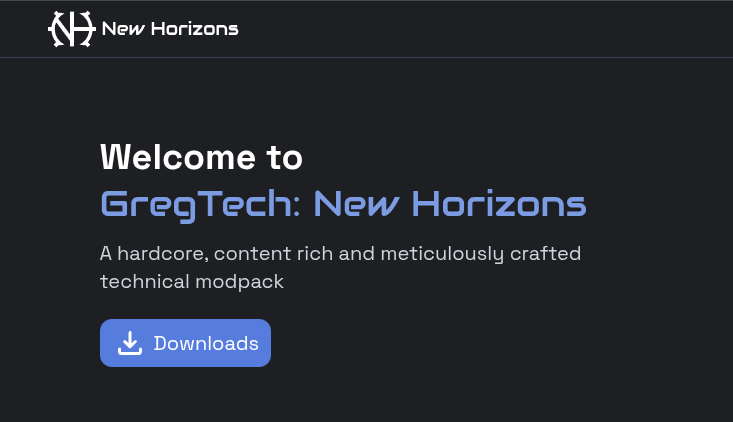

GTNH Kurulum Görselli Anlatım

Java Kurulumu
ADOPTIUM üzerinden Java 25'i kurun ve sornaki adıma geçin.

Prism Launcher Kurulumu
Prism Launcher’ı kurmak için 'Dowland Now' a basıp prismin dosyasını kurun .

Modpack Yükleme
Modpack'i indirdikten sonra dosyalarını Prism Launcher içerisine sürükleyip bırakın.

Sırasıyla adımları takip edin
Öncelikle prisim launcher'ı açtığımızda karsımıza çıkan ana sayfa üzerinden ayarlar yazan yere giriş yapıyoruz.

Bizi karsılayan sayafa sol tarafta java ayarları kısmına giriş yapıyoruz

İşte karşınızda java ayarları kısmı buraya geldikten sonra ok işareti ile gösterilen Otomatik Bul... yazılı buttona basıyoruz

Önümüze açılan sayfadan (Bir java sürümü seç-Prisim launcher 9.4 adlı sayfa) kırmızı ile daire içerisine alınmıs olan javayı seçiyoruz.Bu bizim kurduğumuz java 25 tir.Seçtikrten sonra Tamam diyiniz

Simdi son adıma geldik, java sürümünü seçtiğimiz yerin hemen aşşağısında JVM Argümanları:kısmı vardır oradan sizlere indirme notlarında verilen jvm argüman kodunu kopyalayınız,
ve o boş satıra yapıştırınız
Kurulumu başarıyla tamamladınız.